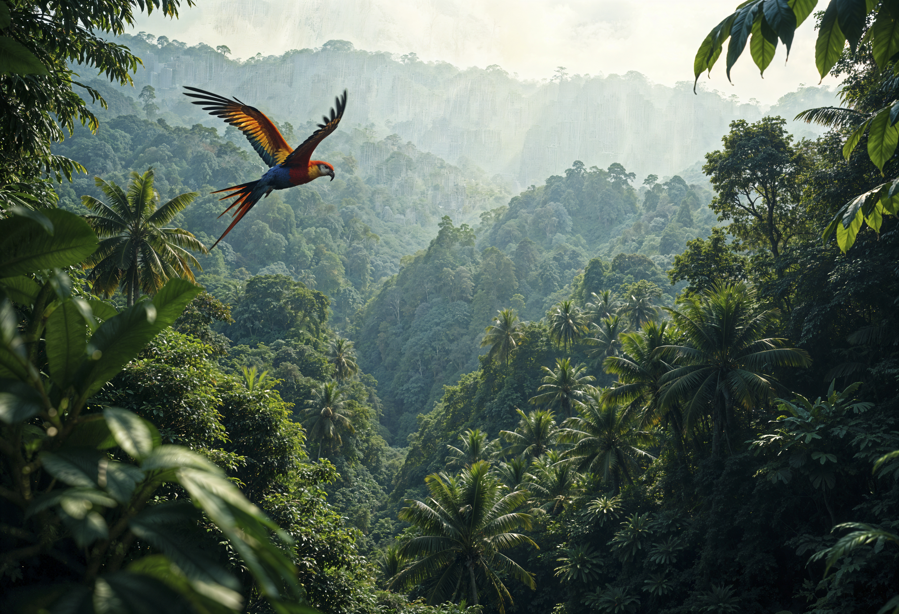
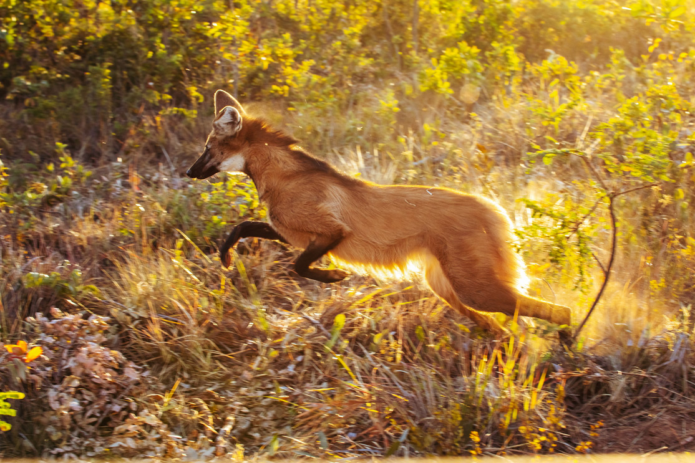
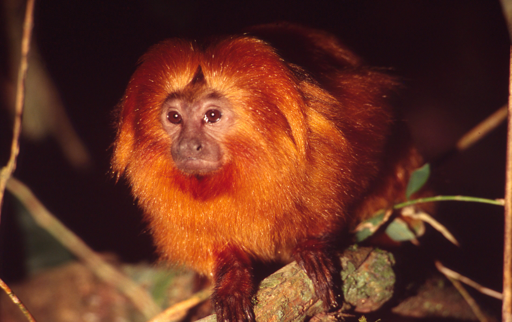
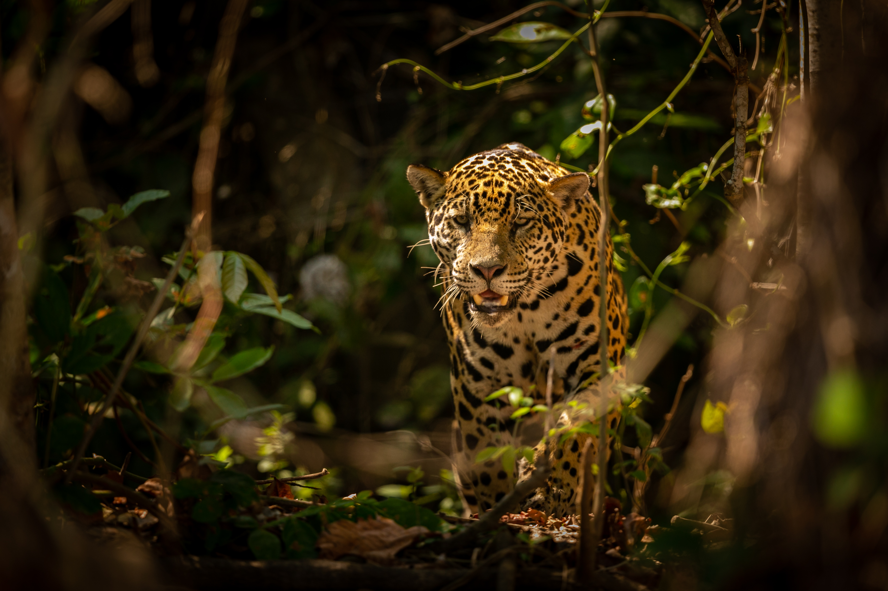

01 · NORTE
Amazônia
≈ 49,3% do território brasileiroMaior bioma do país. Florestas, rios e áreas alagáveis sustentam uma biodiversidade extraordinária.
Ver dados do biomaConheça os biomas continentais brasileiros: ambientes distintos, conectados por água, clima, espécies e histórias de conservação.
Abrir o atlas
ATLAS DE EXPLORAÇÃO IBGE · 2019As áreas abaixo são aproximações baseadas na delimitação do IBGE. Um limite cartográfico não apaga a diversidade local nem as conexões entre ecossistemas.
Maior bioma do país. Florestas, rios e áreas alagáveis sustentam uma biodiversidade extraordinária.
Ver dados do bioma
Savana rica em espécies e nascentes que alimentam importantes bacias hidrográficas.
Ver dados do bioma
Florestas e ecossistemas associados, marcados por alto endemismo e intensa pressão de ocupação.
Ver dados do biomaBioma exclusivamente brasileiro, com espécies adaptadas à sazonalidade e às condições semiáridas.
Ver dados do biomaCampos nativos e mosaicos de ambientes campestres, importantes para a fauna e a flora do Sul.
Ver dados do bioma
Grande planície de inundação, onde os pulsos sazonais da água moldam habitats e ciclos de vida.
Ver dados do biomaFonte das áreas e delimitações: IBGE — Biomas e Sistema Costeiro-Marinho do Brasil. Imagens ilustram espécies e paisagens e não substituem mapas oficiais.